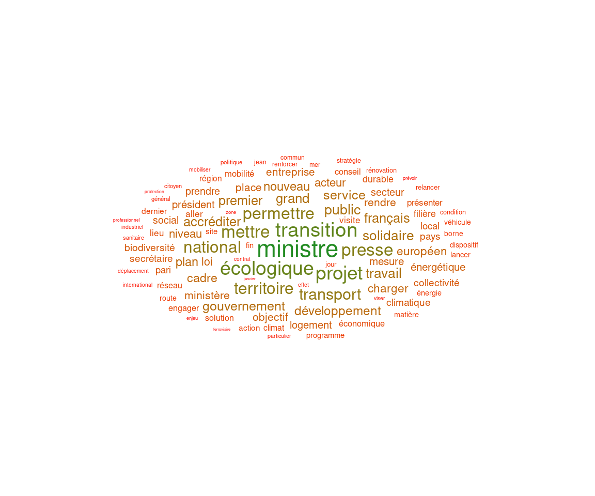

Chapitre 6 Résumer l’information par des graphiques
freq_lemmes <- read.csv2("data/ministereco_freq_lemmes.csv")
tib_lemmes <- read_csv2("data/ministereco_tib_lemmes.csv") %>%
na.omit()
tib_meta <- read_csv2("data/ministereco_tib_meta.csv")
tib_lemmes <- left_join(tib_lemmes, tib_meta, by=c("doc"))6.1 Nuage de mots
Le nuage de mots constitue sans doute l’une des représentations les plus classiques pour ce genre de table lexicale…
On le réalise ici avec le package ggwordcloud (et sa fonction wordcloud())
freq_lemmes_top_100 <- freq_lemmes %>%
top_n(100,freq)
library(ggwordcloud)
ggplot(freq_lemmes_top_100, aes(label = lemma,size=freq, color=log10(freq))) +
geom_text_wordcloud() +
theme_minimal()+
scale_color_gradient(low = "red", high = "forestgreen")
6.2 Diagramme en bâtons: occurrences, spécificités
ggplot2::ggplot(dplyr::filter(freq_lemmes,freq>2000),
ggplot2::aes(x=forcats::fct_reorder(lemma,freq), y=freq)) +
ggplot2::geom_bar(stat="identity", fill="skyblue")+
ggplot2::coord_flip()tib_top_spec <- mixr::tidy_specificities(tib_lemmes,
lemma,
ministre,
top_spec=10)
mixr::plot_specificities(tib_top_spec,lemma,ministre)6.3 Analyse factorielle des correspondances
On peut tenter de visualiser une table lexicale via une analyse factorielle des correspondances (AFC).
En effet, une table lexicale est assimilable à un tableau des effectifs croisés de deux variables qualitatives. L’AFC permet dans ce cas de figure d’obtenir une représentation en quelques dimensions (idéalement, 2) d’un tableau qui en comprend \(k\).
Nous allons ici repartir d’une table lexicale ne comprenant que les lemmes avec les plus hautes spécificités. Nous repartons pour cela de la table tib_spec calculée dans la partie 5.6.
# lemmes hautement spécifiques d'une partie ou d'une autre
lemmes_spec=tib_spec %>%
filter(spec>10) %>%
pull(lemma) %>%
unique()
# table avec lemmes hautement spécifiques
tib_hspec=tib_lemmes %>%
filter(lemma %in% lemmes_spec)
# table lexicale
tib_lex=table(tib_hspec$lemma,tib_hspec$ministre)Nous allons utiliser le package FactoMineR pour réaliser l’analyse factorielle des correspondances et factoextra pour produire les graphiques associés.
library(FactoMineR)
result_CA=CA(tib_lex, graph=FALSE)Dans notre cas, on souhaite représenter 4 dimensions (le nombre de ministres) sur un graphique en 2D. Cette transformation correspond nécessairement à une perte d’information qui est quantifiée via les eigenvalues de l’AFC.
library(factoextra)
fviz_screeplot(result_CA, addlabels = TRUE, ylim = c(0, 50))Ainsi en réduisant la dimensionalité à 2 axes on parvient tout de même à représenter 79% de l’information.
fviz_ca_biplot(result_CA, repel=TRUE)
La lecture de ce graphique peut se faire de différentes manières:
en considérant l’emplacement des termes et des parties par rapport aux axes. L’axe des abscisses est le “plus structurant” dans le corpus (c’est celui qui explique la plus forte inertie du nuage de points), les termes et parties qui se projettent le plus loin sur l’axe sont ceux qui y contribuent le plus.
en considérant l’emplacement des termes et parties les uns par rapport aux autres: deux termes proches sont généralement corrélés l’un à l’autre, deux parties proches l’une de l’autre seront généralement plus proches du point de vue du vocabulaire employé, un terme sera généralement plus proche de la partie dont il est spécifique.
Ainsi à l’examen du graphique ci-dessus, on peut avoir quelques indices quant au contenu des communiqués de presse les plus discriminants (en fonction du ministre en exercice). Probablement:
- pour Barbara Pompili, des considérations en lien avec la problématique du logement (“loyer”,“locataire”,“bailleur”,“immobilier”)
- pour Nicolas Hulot, peut-être une préoccupation plus importante pour le transport notamment ferroviaire (“mobilité”,“cheminot”) et une surreprésentation des bulletins automatiques Vigilance Crues
- pour Elisabeth Borne, une mention plus fréquente des problématiques liées à l’énergie (“pétrolier”,“raffinerie”,“station”,“charbon”) et peut-être un intérêt pour le problème de l’industrie textile et du phénomène de fast-fashion (“fashion”).
- pour François de Rugy, des préoccupations “à mi-chemin” entre celles de Nicolas Hulot et d’Elisabeth Borne
6.4 Graphes
On souhaite maintenant représenter les relations entre les mots par un graphe (le lien est défini par la co-occurrence des mots dans un même commentaire). On va pour ce faire créer un graphe à partir du tableau mots_cooc.
mots_graph <- igraph::graph_from_data_frame(mots_cooc %>% filter(correlation>0.2))
class(mots_graph)## [1] "igraph"Un graphe se caractérise par
- des noeuds (dans notre cas les lemmes)
- des liens (dans notre cas la cooccurence de deux lemmes dans un même commentaire)
- des attributs (par exemple dans notre cas la fréquence de cooccurrence n et la corrélation cor font partie des attributs qui permettent de décrire les liens)
Maintenant que l’objet de classe “graph” est créé, on va le représenter. Il faut pour cela calculer un “layout” des différents noeuds du graphe puis spécifier ce qu’on veut faire apparaître graphiquement à travers les commandes du package ggraph dont la logique est proche de celle de ggplot2.
library(ggraph)
my_graph <- mots_graph %>%
ggraph::ggraph(layout = "fr") +
ggraph::geom_edge_link(edge_colour="steelblue") +
ggraph::geom_node_point(color = "khaki1", size = 5) +
ggraph::geom_node_text(aes(label = name), repel = TRUE) +
ggplot2::theme_void()plot(my_graph)